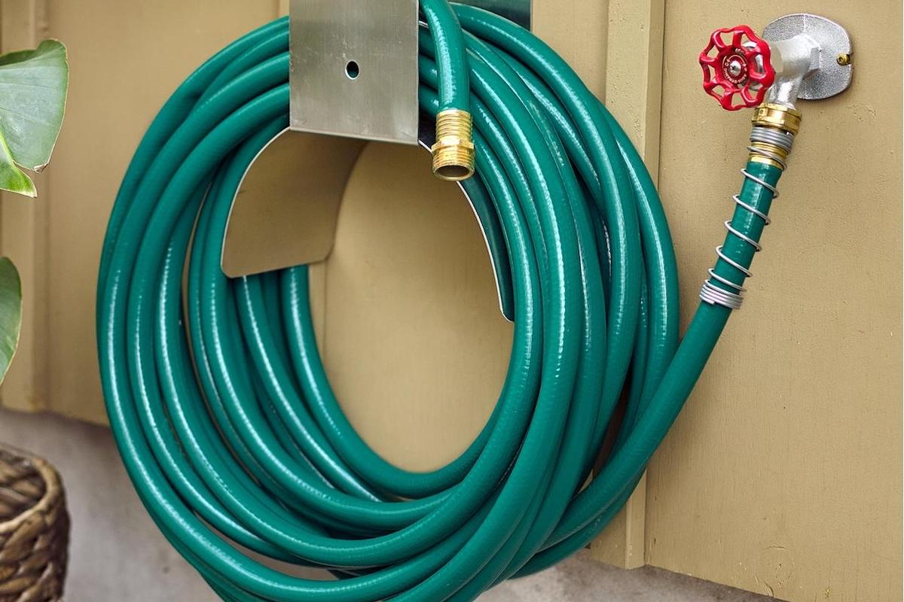

This page was built for the module Deep Learning and it showcases
the image classification with ml5.
To get a first understanding about the model and its limitations, you can have a look at the Image Classification
Examples.
After that, the model can be tested with your own images in the section Image Classification – Test your own
image.
Lastly, you can find a short Discussion about the learnings and a Documentation about this project.
Examples for correct Classification
The following three images are examples for correct classification by the model.
Loading...
Loading...
Loading...
Examples for false Classification
The following three images are examples for incorrect classification by the model.

Loading...
Loading...
Loading...
In this section you can add your own image to classify by the model. You can either drag your image into the
dropzone or select your image from your file browser.
Drop image here or
upload files
Upload is restricted to images only (e.g.: .png, .jpg, .jpeg)
No image uploaded. Please add an image to
the drop zone.
While implementing the image classification it became obvious, that the classification results vary depending on
the (clarity of the) content and quality of the images.
For example, the model may correctly classify clear images with calm backgrounds of known categories like animals, displayed in typical surroundings.
However, the model may struggle with images representing less common classes (e.g. garden hose), unusual shapes (e.g. flat soccer ball) or images that have a busy background, so that the main object of the image cannot be identified correctly.
Unexpectedly, there is also a limitation for some known categories (e.g. horse image, colosseum). On ther other hand, the model is able to classify objects correctly, even when there are multiple of them stacked together (e.g. soccer ball image).
The reason for this may lie in the model's training data and its ability to recognize specific features in the images. If the model "doesn't know" (wasn't trained for) certrain objects or wasn't trained to classify objects despite of noise, shifted angles, etc., it may be unable to classify variations of those objects.
Overall, it might be possible to reduce these limitations with further training of the model (but overfitting is to be prevented).
General
This code demonstrates the use of the ml5 library to classify images using MobileNet
and Chart.js for visualizing classification results.
It provides a user interface with different interactions (e.g. dropzone and upload-link to upload an image for
classification, accordions to structure the webpage).
Frameworks & Technologies
ml5.js: In this code, ml5 is used to load and use the MobileNet model for image classification.
chart.js: Chart.js library is used to create the bar charts to display the classification results
graphically in canvas elements.
JavaScript: With JavaScript interactivity and functionality is added, enabling actions like image
classification using ml5.js, rendering bar charts with Chart.js, handling file uploads, and responding to user
events like button clicks and file drops.
HTML: HTML provides the structure for the user interface, including elements such as buttons, divs, and
canvases.
CSS: CSS takes care of the styling of the user interface (e.g. of the appearance of elements, providing
visual feedback on user interactions).
Further Documentation
Functions
initializeModelAndChart():
This function initializes the MobileNet model using the ml5 library and the Chart.js bar charts for each canvas
in the canvasIDs array (for every canvas that is diplayed) so that the classification results can be displayed.
setLoadingState(isLoading):
This function takes care of showing or hiding and styling the loading state for when the classification result
is loading.
handleFileUpload(event):
This function handles the file upload events regarding the dropzone or file browser upload and reads the
image-file using a FileReader.
Once an image is uploaded and processed, it updates the user interface and enables the classification.
classifyAndDisplayResults(imageElement, canvasId):
This function classifies the images using the MobileNet model. After the classification, the corresponding bar
chart (with the help of the updateChart-function) and result-divs are updated through this function.
updateChart(results, canvasId):
This function takes care of the update of the bar charts, as it sets chart labels and the data based on the
classification results.
reset():
This helps to reset states if needed, e.g. for clearing uploaded images and classification results when the
"Reset-Button is clicked.
It also disables the "Classify Image" and "Reset" button on click of "Reset".
Event Listeners
DOMContentLoaded:
Initializes the MobileNet model and Chart.js bar charts when the HTML document loads.
Sets up event listeners for buttons, file upload, drag-and-drop, and accordions.
classifyBtn:
Listens for clicks on the "Classify Image" button, triggers classification and displays results.
resetBtn:
Listens for clicks on the "Reset" button to reset the uploaded image, shown results and bar chart.
examplesBtn:
Classifies the example images on button click.
upload-link:
Opens a file input dialog for image uploads on click of the upload link.
dropzone:
Handles drag-and-drop functionality for image uploads (when image is dropped into the drop zone).
accordions:
Handles the accordion toggle functionality for displaying and hiding content panels.